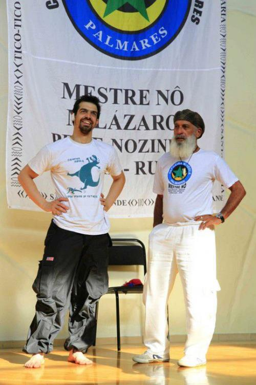

мини-интервью с проф.федерико

кратенько так, но по делу.
1) Каково это, заниматься капоэйрой, не будучи бразильцем?
- Хорошо. Думаю, капоэйра может привлечь кого угодно в любой части мира; важно не ломать свой характер и не пытаться стать тем, кем не являешься. Например, можно понимать баиянскую malandragem, но если пытаться ее воспроизвести, то будешь похож на клоуна. В моем видении, у каждой культуры своя malandragem.
2) Тебе не сложно выполнять ритуалы капоэйры?
- Ритуалы капоэйры ни для кого не просты; я часто вижу бразильцев с теми же сложностями. В капоэйре много традиций, но в то же время, это живая культура, так что нужно каждый день чувствовать, что принципиально, а что нет. И еще важно, я считаю, не прилагать чрезмерных усилий: иностранцы не обязаны менять свои принципы или религию, чтобы быть хорошими капоэйристами; нужно открыться этой культуре, чтобы понять тонкости ритуалов капоэйры.
3) Как ты смотришь на капоэйру вне Бразилии и каково твое мнение насчет ее будущего?
- Я вижу большой потенциал у капоэйры вне Бразилии; уверен, что уровень будет расти, тем более, что иногда иностранцы ценят капоэйру больше, чем сами бразильцы. С другой стороны, посмотрим, добьется ли не бразильская капоэйра того же уровня магии или превратится просто в упражнение.
перевод Мария (Manhosa)
Брал интервью contra-mestre Nozinho